法人向け SaaS 資料請求
見積ノート
営業チームが見積もりの担当者と進捗を共有するサービス。ファーストビューに見積一覧を置き、絞り込みの操作で使い方を伝えました。
スマホ表示のLP 14点タップで実際のページが開きます
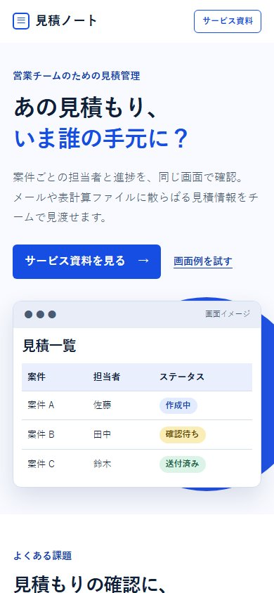
見積ノート資料請求
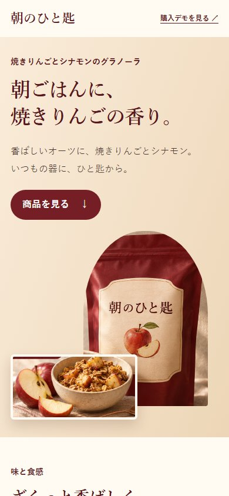
朝のひと匙商品購入
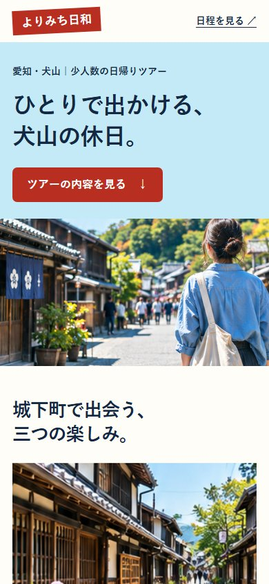
よりみち日和日程選択・8P
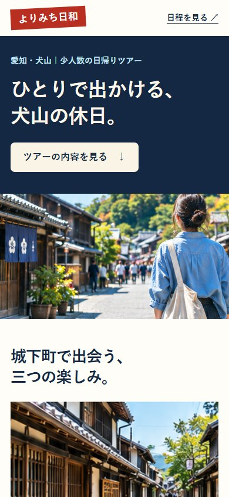
よりみち日和日程選択・12P
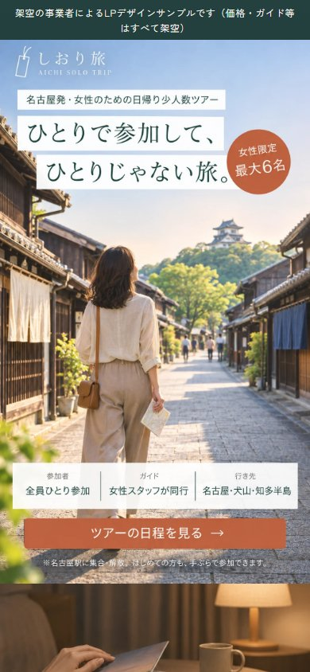
しおり旅ツアー予約
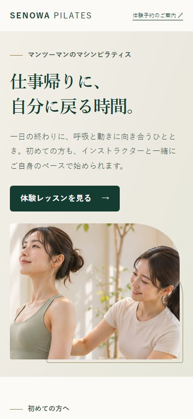
SENOWA体験予約・8P
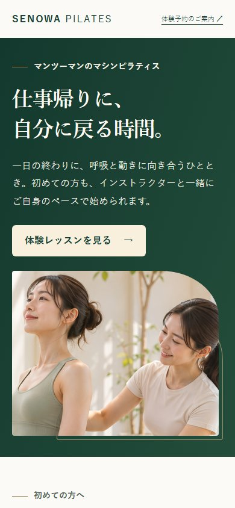
SENOWA体験予約・12P
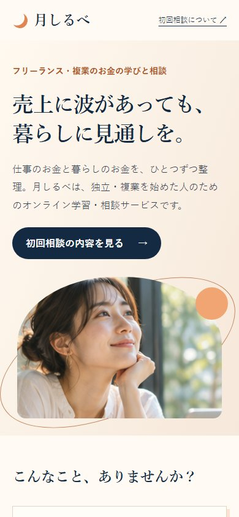
月しるべ初回相談
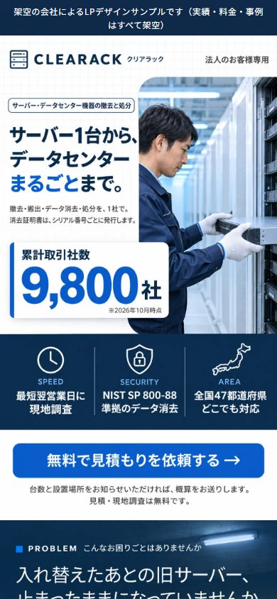
クリアラック無料見積もり
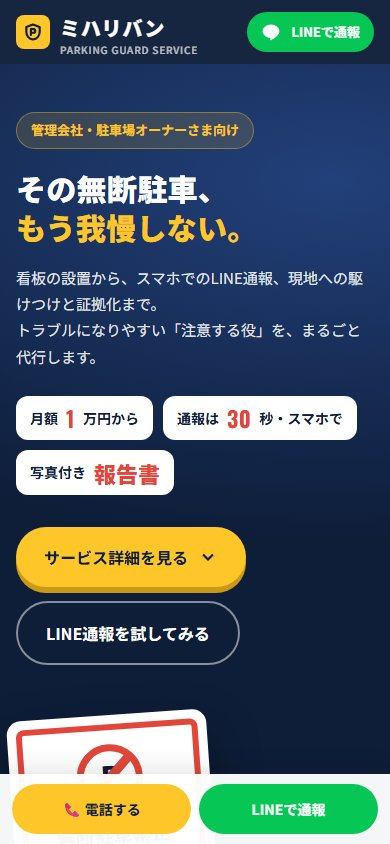
ミハリバンLINE相談
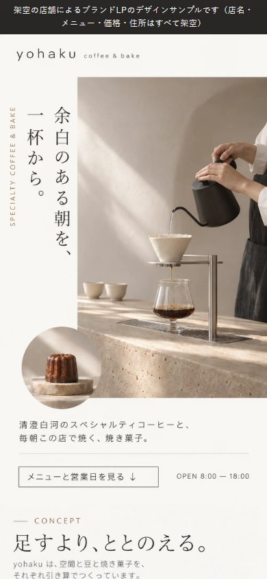
yohaku来店・ブランド
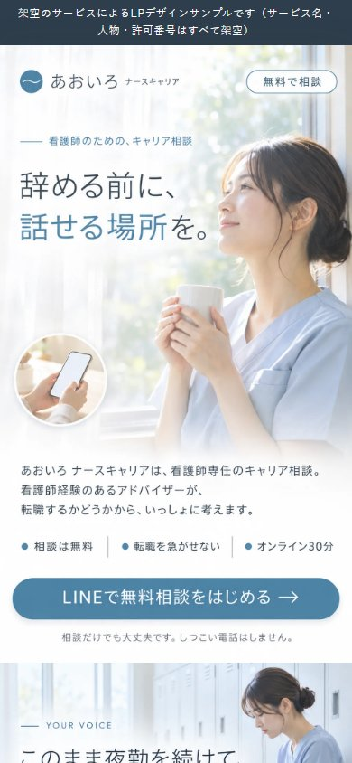
あおいろ無料相談
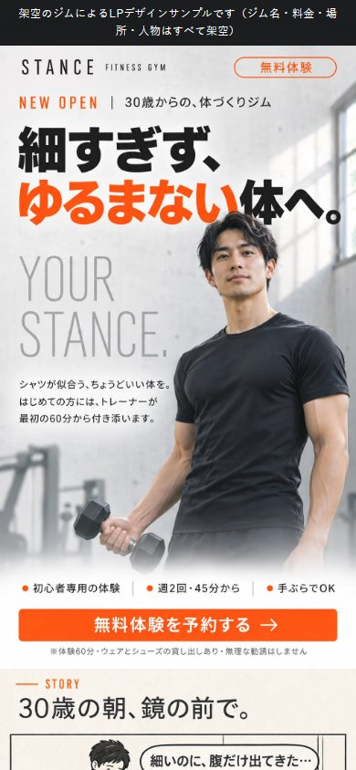
STANCE体験予約・8P

STANCE体験予約・12P
法人向け SaaS 資料請求
営業チームが見積もりの担当者と進捗を共有するサービス。ファーストビューに見積一覧を置き、絞り込みの操作で使い方を伝えました。
食品EC 商品購入
焼きりんごとシナモンのグラノーラ。パッケージと食材の写真で味を想像してもらい、食べ方と原材料を確認してから数量を選べる構成です。
観光・日帰りツアー 日程選択
一人で参加できる犬山のツアー。街並みと食べ歩きの写真で行き先の魅力を伝え、モデルコースから日程選択へ案内します。
8パート版は見どころを短く紹介。12パート版では時刻入りの行程やプラン内容、天候の目安まで確認できます。
観光・日帰りツアー ツアー予約
ひとり旅に興味がある女性に向けた、名古屋発の少人数ツアー。全員がひとり参加であることと女性ガイドが同行することを伝え、行程・料金・FAQを確認してから予約デモへ進める構成です。
ピラティススタジオ 体験予約
仕事帰りに通いたい初めての方向け。マンツーマン指導の様子と当日の流れを見せ、体験予約のハードルを下げる構成です。
8パート版は体験と予約を簡潔に案内。12パート版はマシンの使い方やインストラクターのサポートを詳しく紹介します。
法人向け IT機器処分 無料見積もり
サーバーの入れ替えやデータセンター移転で、旧機器の処分を任された情報システム部門の担当者向け（架空の会社）。撤去から消去証明書まで1社で終わることを先に示し、セキュリティ・料金例・対応範囲を確かめてから見積依頼へ進める構成です。
駐車場管理サービス LINE通報・無料相談
無断駐車に悩む管理会社・駐車場オーナー向けの注意・証拠化代行（架空のサービス）。直接注意しに行く不安に応えて「私たちがしないこと」を明示し、LINE通報フォームをページ内で実際に試せるデモを入れました。
カフェ ブランドサイト・来店
カフェ巡りをする20〜30代の女性に向けた、スペシャルティコーヒーと焼き菓子の店のブランドLP（架空の店舗）。漆喰とトラバーチンの空間、光と影の写真、細い明朝の文字組みで静けさを出し、定番メニュー・席の使い方・営業カレンダーを確かめてから Instagram へ進む構成です。
スマホ版とPC版の2つのカンプを用意し、画面幅で切り替わります。
看護師のキャリア支援 LINE無料相談
夜勤や将来の働き方に悩む20代後半〜30代の女性看護師に向けた、看護師専任のキャリア相談（架空のサービス）。「辞める前に、話せる場所を。」を軸に、急がせない・電話をしないという安心を繰り返し伝え、病棟以外の働き方と相談30分の中身を見せてからLINE相談へ進めます。
白・淡いブルー・ベージュの配色で、写真は端を直線で切らずに地へ溶かし、見出しを写真に直接重ねています。
フィットネスジム 無料体験予約
新規オープンのジム（架空）で、「ひょろいのも、太るのも嫌」な30歳前後の男性に向けたLP。「細すぎず、ゆるまない体へ。」を軸に、鏡の前の朝から体験に行くまでを4コマ漫画で見せ、初心者が続く仕組みと料金を確かめてから無料体験へ進めます。
8パート版は漫画のあと設備・トレーナー・料金で短く案内。12パート版では、部位別のメニュー、仕事帰りの45分、入会後に続く仕組み、アクセスまで確かめられます。